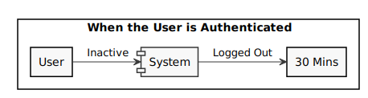
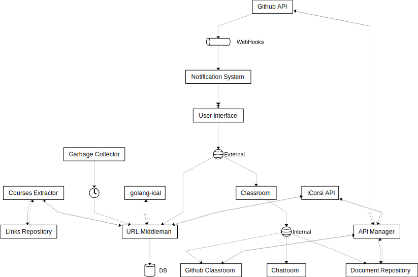
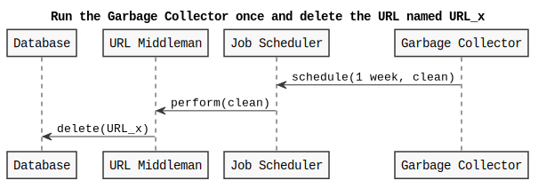

Getting started
You will use Markdown, PlantUML, architectural decision records, feature models and connector views to describe a software architecture model about your own project.
This document will grow during the semester as you sketch and refine your software architecture model.
When you are done with each task, please push so we can give you feedback about your work.
We begin by selecting a suitable project domain.
0. Domain Selection
Submit the name and brief description (about 100 words) of your domain using the following vision statement template:
For [target customers]
Who [need/opportunity/problem]
The [name your project]
Is [type of project]
That [major features, core benefits, compelling reason to buy]
Unlike [current reality or competitors]
Our Project [summarize main advantages over status quo, unique selling point]
Please indicate if your choice is:
- a project you have worked on in the past (by yourself or with a team)
- a project you are going to work on this semester in another lecture (which one?)
- a new project you plan to build in the future
- some existing open source project you are interested to contribute to
The chosen domain should be unique for each student.
Please be ready to give a 2 minute presentation about it (you can use one slide but it's not necessary)
Project Name: USI Calendar
Project Type: Project I have worked on in the past
Vision Statement: This project is for USI students and is called USI Calendar. Students can – as of now – download the calendar of the current semester's courses from USI's website. The problem with this solution is that it is not possible for students to choose which courses to include in the calendar, and which to exclude. USI Calendar aims at giving the possibility to users to be able to choose and display in their calendar their own courses. Moreover, USI Calendar will create "classrooms" for each course. In these classrooms students will be automatically added based on the courses they chose to include in their calendars.
Additional Information:
1. Architectural Decision Records
Software architecture is about making design decisions that will impact the quality of the software you plan to build.
Let's practice how to describe an architectural decision. We will keep using ADRs to document architectural decisions in the rest of the model.
Use the following template to capture one or more architectural design decisions in the context of your project domain
ADR #1 (Choosing Courses)
- What did you decide?
The user is able to select courses from all programs and export the selected courses' schedules as a single calendar.
- What was the context for your decision?
The goal is to create a system in which students can select the courses they attend. After the courses have been selected, the system will generate a URL to the custom calendar containing all the courses' schedules. The URL can then be added to the calendar of choice.
- What is the problem you are trying to solve?
How can students select the courses that they attend in order to create a custom calendar?
- Which alternative options did you consider?
- Making the student select any course from any program and generate the calendar based on those choices;
- Making the student select any course only from one program and generate the calendar based on those choices;
- Making the student select any course from any program/one program, and generate one calendar for each choice.
- Which one did you choose?
I chose the first option: Making the student select any course from any program and generate the calendar based on those choices.
- What is the main reason for that?
The following are the consequences of this decision:
- The student has more flexibility when choosing which courses to subscribe to;
- Only one calendar is generated, no need to create n calendar for n courses;
- The student can also select courses from programs that he is not enrolled in;
- This type of choice is more challenging to display on a UI;
- If the student drops out from one of the courses, he/she needs to generate a new calendar without that course.
ADR #2 (Exporting Assignments Calendar)
- What did you decide?
Exporting the calendar for the assignments together with the courses' schedule calendar.
- What was the context for your decision?
The goal is to facilitate the life of the student by including the calendar of the assignments together with the calendar of the selected courses' schedules. The assignments' calendar needs to be taken from iCorsi's API, so the process will a bit longer since the user needs to input their iCorsi email and token.
- What is the problem you are trying to solve?
Should the assignment's calendar from iCorsi be included in the courses' schedule calendar?
- Which alternative options did you consider?
- Exporting the calendar as another URL to be copied and saved by the student;
- Exporting the calendar together with the schedules calendar;
- Not using this feature because of the API's restrictions.
- Which one did you choose?
I chose the second option: Exporting the calendar together with the schedules calendar.
- What is the main reason for that?
The following are the consequences of this decision:
- The student will only need to copy one URL and deal with one calendar;
- The student will have a synchronized list of all the deadlines for the courses he/she attends;
- It is more tedious for the user to do the initial setup (generate the token + write down the email).
ADR #3 (Adding Users to Classes)
- What did you decide?
Students will be automatically added to classrooms based on the courses they are enrolled in iCorsi.
- What was the context for your decision?
The goal is to facilitate communication between students and access to course material by creating classes in which only the enrolled students can enter. Moreover, students could be also automatically added to each classroom thanks to the course registration list provided by the iCorsi API.
- What is the problem you are trying to solve?
Should students be added to the classrooms automatically, and if so, based on which criteria?
- Which alternative options did you consider?
- Users are not automatically added to classrooms, they must select their courses manually;
- Users are automatically added to classes based on the courses they choose when creating the calendar;
- Users are automatically added to classes based on the courses they are enrolled in iCorsi.
- Which one did you choose?
I chose the third option: Users are added to classes based on the courses they are enrolled in iCorsi.
- What is the main reason for that?
The following are the consequences of this decision:
- The user does not need to check him/herself which courses they are enrolled in;
- If the courses change, the classes can be automatically/manually updated thanks to iCorsi's API
2. Quality Attribute Scenario
Pick a scenario for a specific quality attribute. Describe it with natural language.
Refine the scenario using the following structure:
Stimulus: condition affecting the system
Source: entity generating the stimulus
Environment: context under which stimulus occurred (e.g., build, test, deployment, startup, normal operation, overload, failure, attack, change)
Response: observable result of the stimulus
Measure: benchmark or target value defining a successful response
Scenario #1
Quality: Testability
Scenario: In the case of a new release being pushed, it must have a code coverage of at least 90% and pass all tests before being deployed.
Scenario #2
Quality: Deployability
Scenario: If all tests pass and the code coverage is at least 90%, the release can be deployed on the production server.
Scenario #3
Quality: Recoverability
Scenario: After maintenance work, the server must come back online in less than 1 minute.
Scenario #4
Quality: Authentication
Scenario: If a user is authenticated, it must be logged out automatically after 30 minutes of inactivity.
Scenario #5
Quality: Durability
Scenario: If the shortened URL hasn't been used for at least 1 week, remove it from the database.
Scenario #6
Quality: Composability
Scenario: When all components are ready, they are composed by means of a docker compose files into 2 separate docker images, one for the backend and one for the frontend.
Scenario #7
Quality: Performance
Scenario: If a user tries to access the website, this should load and be ready to use in less than 1 second.
3. Quality Attribute Tradeoff
Pick a free combination of two qualities on the map and write your name to claim it.
Then write a short text giving an example for the tradeoff in this assignment.
Usability vs. Complexity
By making the service usable, we want as many people as possible to be able to use it with little to none prior knowledge. However, this would mean that advanced features cannot be developed. On the other hand, we can develop more advanced features, filtering methods etc., but then the system becomes less usable and users would be required to have some previous knowledge of the domain.
Durability vs. Performance
If we wanted to save in the server all the URLs generated by the users, then this would mean that increasing the number of users will in turn increase the number of URLs in the server, which in turn will lead to a degradation of the performance of the service itself. On the other hand, by saving just the most frequent URLs, this would lead to an improvement in the performance of the service.
Customizability vs. Design Consistency
Developing a platform that can be used by any university for their calendars and classrooms would be great, but this would lead to inexistent design consistency, since every university could possibly change some sections to whatever they prefer. Making the website design consistent, on the other hand, would lead to the possibility of making the website only available to USI (similarly to what happens with iCorsi).
4. Feature Modeling
In the context of your chosen project domain, describe your domain using a feature model.
The feature model should be correctly visualized using the following template:


If possible, make use of all modeling constructs.
The feature that belongs to a "competitor" (i.e. USI), is the generation of the calendars with all courses of a program. All the other features are only found in the USI Calendar project.
5. Context Diagram
Prepare a context diagram to define the design boundary for your project.
Here is a PlantUML/C4 example to get started.

Make sure to include all possible user personas and external dependencies you may need.
6. Component Model: Top-Down
Within the context of your project domain, represent a model of your modular software architecture decomposed into components.
The number of components in your logical view should be between 6 and 9:
- At least one component should be further decomposed into sub components
- At least one component should already exist. You should plan how to reuse it, by locating it in some software repository and including in your model the exact link to its specification and its price.
- At least one component should be stateful.
The logical view should represent provide/require dependencies that are consistent with the interactions represented in the process view.
The process view should illustrate how the proposed decomposition is used to satisfy the main use case given by your domain model.
You can add additional process views showing how other use cases can be satisfied by the same set of components.
This assignment will focus on modularity-related decisions, we will worry about deployment and the container view later.
Here is a PlantUML example logical view and process view.


Logical View
Process Views
Use Case #1:
Use Case #2:
7. Component Model: Bottom-Up
Within the context of your project domain, represent a model of your modular software architecture decomposed into components.
To design this model you should attempt to buy and reuse as many components as possible.
In addition to the logical and process views, you should give a precise list to all sources and prices of the components you have selected to be reused.
Write an ADR to document your component selection process (indicating which alternatives were considered).
Logical View
External Components:
golang-ical: https://github.com/JacopoD/golang-ical
URL Database: https://www.mongodb.com/atlas/database
Chatroom: https://minnit.chat/
iCorsi API: https://moodledev.io/docs/apis
Github API: https://docs.github.com/en/rest?apiVersion=2022-11-28
Process Views
Use Case #1:
Use Case #2:

ADR #4 (Choosing Database Service)
- What did you decide?
USI Calendar will use MongoDB Atlas Serverless as the database module.
- What was the context for your decision?
For the database module of USI Calendar, we need something that is bare-bone but still offers security and backup features. Since the traffic is not that frequent, a pay as you go service would be the best.
- What is the problem you are trying to solve?
What is the best database service to use for USI Calendar?
- Which alternative options did you consider?
- Serverless - $0.10/Million Reads and $1.00/Million Writes
- Dedicated Server - From $0.20/h
- Hosting it locally - Free
- Which one did you choose?
I chose the first option: Serverless
- What is the main reason for that?
The following are the consequences of this decision:
- Very competitive price
- Pay-as-you-go pricing plan
- It has a max of 1TB of storage for $0.25/GB-month
- It has always-on security and backups
- Does not have a server connected to it where to host the backend
ADR #5 (Choosing Chatroom Service)
- What did you decide?
USI Calendar will use Minnit as the service for the chatroom module of the website.
- What was the context for your decision?
The chatrooms of the classrooms will be created based on the number of users per course. This chatroom should be customizable and able to support many concurrent users.
- What is the problem you are trying to solve?
What is the best chatroom service for USI Calendar?
- Which alternative options did you consider?
- DeadSimpleChat - From $199/Month
- Minnit - From $100/Month
- Chatango - Free
- Which one did you choose?
I chose the second option: Minnit
- What is the main reason for that?
The following are the consequences of this decision:
- Customizable UI
- Best price
- Up to 2,500 concurrent users
- Unlimited number of different chatrooms
8. Interface/API Specification
In this iteration, we will detail your previous model to specify the provided interface of all components based on their interactions found in your existing process views.
choose whether to use the top down or bottom up model. If you specify the interfaces of the bottom up model, your interface descriptions should match what the components you reuse already offer.
decide which interface elements are operations, properties, or events.
Get started with one of these PlantUML templates, or you can come up with your own notation to describe the interfaces, as long as it includes all the necessary details.
The first template describes separately the provided/required interfaces of each component.

The second template annotates the logical view with the interface descriptions: less redundant, but needs the logical dependencies to be modeled to show which are the required interfaces.
Interface Specification
OpenAPI Specification
9. Connector View
Extend your existing models introducing the connector view
For every pair of connected components (logical view), pick the most suitable connector. Existing components can play the role of connector, or new connectors may need to be introduced.

Make sure that the interactions shown in the process views reflect the primitives of the selected connector
Connector View

Process View
ADR #6 (Choice of Connector)
- What did you decide?
A Stream connector is used to connect the Notification System component and the User Interface component.
- What was the context for your decision?
Notifications need to be pushed from the Notification System component to the user interface. This needs to be done in such a way that a notification is displayed at a time.
- What is the problem you are trying to solve?
What is the best connector to use between the Notification System and the User Interface?
- Which alternative options did you consider?
- Stream Connector
- Message Bus
- Which one did you choose?
I chose the first option: Stream Connector
- What is the main reason for that?
The following are the consequences of this decision:
- 1-1 Cardinality
- Asynchronous
- Transfers only data
10. Adapters and Coupling
- Highlight the connectors (or components) in your existing bottom-up design playing the role of adapter. (We suggest to use the bottom-up design since when dealing with externally sourced components, their interfaces can be a source of mismatches).
- Which kind of mismatch** are they solving?
- Introduce a wrapper in your architecture to hide one of the previously highlighted adapters
- Where would standard interfaces play a role in your architecture? Which standards could be relevant in your domain?
- Explain how one or more pairs of components are coupled according to different coupling facets
- Provide more details on how each adapter solves the mismatches identified using pseudo-code or the actual code
- How can you improve your architectural model to minimize coupling between components? (Include a revised logical/connector view with your solution)
** If you do not find any mismatch in your existing design we suggest to introduce one artificially.
Hints
(1) Should we find cases where two components cannot communicate (and are doing it wrongly) and highlight they would need an adapter?, or cases where we have already a "component playing the role of adapter in the view" and highlight only the adapter?
Both are fine. We assumed that if you draw a dependency (or a connector) the interfaces match, but if you detect that the components that should communicate cannot communicate then of course introduce an adapter to solve the mismatch
(2) Please show the details about the two interfaces which do not match (e.g., names of parameters, object structures) so that it becomes clear why an adapter is needed and what the adapter should do to bridge the mismatch
(5-6) These questions are about the implications on coupling based on the decisions you documented in the connector view. Whenever you have a connector you couple together the components and different connectors will have different forms of coupling
For example, if you use calls everywhere, do you really need them everywhere? is there some pair of components where you could use a message queue instead?
Regarding the coupling facets mentioned in question 5. You do not have to answer all questions related to "discovery", "session", "binding", "interaction", "timing", "interface" and "platform" (p.441, Coupling Facets). Just the ones that you think are relevant for your design and by answering them you can get ideas on how to do question 6.
Logical View
Tasks
- The two components that are acting as adapters are the URL Middleman and the API Manager.
- In the case of the golang-ical Adapter , it is using the API provided by golang-ical and creating ad-hoc methods to aggregate multiple ical URLs to form a single calendar. In the case of the GH/iC Adapter, it is used to uniform the data received by the iCorsi and GitHub APIs.
- The two wrappers are highlighted in the above logical view.
- In the case of the golang-ical Wrapper, it would need to use the Internet Calendaring and Scheduling Core Object Specification (iCalendar) (RFC-2445). In the case of the GH/iC Wrapper, however, I would use an ad-hoc standard to normalize the data returned by both iCorsi and GitHub.
- In my case I can distinguish two different types of coupling, one regarding the components based on the HTTP Protocol, and the other regarding the components connected based on the iCalendar specification. In the case of the components connected through the HTTP Protocol -- i.e., all the frontend components and the respective backend components -- we can say that such components are loosely coupled. In the case of the components connected based on the iCalendar specification, we can say that the components -- i.e., the golang-ical Adapter and golang-ical are tightly coupled.
- Let's see the pseudocode for the two cases:
// golang-ical Adapter
// Here we are in the URL Middleman component
var baseIcalUrl string = "https://search.usi.ch/[...]"
var coursesURLs *[]string = mongo.GetCoursesURLs()
icals := icalAdapter.ConvertToIcals(&coursesURLs)
aggIcal := icalAdapter.Aggregate(&baseIcalUrl, &icals)
// GH/iC Adapter
// Here we are in one of the components that makes use of Github/iCorsi data
iCorsiData := ghicManager.GetiCorsiData("courses")
githubData := ghicManager.GetGithubData("user")
cleanDataiCorsi := ghicAdapter.Convert(&iCorsiData)
cleanDataGithub := ghicAdapter.Convert(&githubData)
- Coupling has been minimized with the introduction of the golang-ical Wrapper. The logical view can be found at the beginning of this exercise.
11. Physical and Deployment Views
a. Extend your architectural model with the following viewpoints:
Physical or Container View
Deployment View
Your model should be non-trivial: include more than one physical device/virtual container (or both). Be ready to discuss which connectors are found at the device/container boundaries.
b. Write an ADR about which deployment strategy you plan to adopt. The alternatives to be considered are: big bang, blue/green, shadow, pilot, gradual phase-in, canary, A/B testing.
c. (Optional) Prepare a demo of a basic continuous integration and delivery pipeline for your architectural documentation so that you can obtain a single, integrated PDF with all the viewpoints you have modeled so far.
For example:
- configure a GitHub webhook to be called whenever you push changes to your documentation
- setup a GitHub action (or similar) to build and publish your documentation on a website
Container View
Deployment View
ADR #7 (Choice of Deployment Strategy)
- What did you decide?
The chosen deployment strategy will be the Blue/Green deployment strategy.
- What was the context for your decision?
USI Calendar has a small user base which is all composed by USI university students. Moreover, since USI calendar is still in very early development, releases can be pushed as soon as the features are ready.
- What is the problem you are trying to solve?
What is the more appropriate deployment strategy for USI Calendar?
- Which alternative options did you consider?
- Big Bang
- Blue/Green
- Shadow
- Pilot
- Gradual Phase-in
- Canary
- A/B testing
- Which one did you choose?
I chose the second option: Blue/Green
- What is the main reason for that?
The following are the consequences of this decision:
- Small user base
- Can easily switch between new and old version
- User might be required to manually change some configurations (e.g. add another/change URL in his/her calendar)
12. Availability and Services
The goal of this week is to plan how to deliver your software as a service with high availability.
- If necessary, change your deployment design so that your software is hosted on a server (which could be running as a Cloud VM). Your SaaS architecture should show how your SaaS can be remotely accessed from a client such as a Web browser, or a mobile app
- Sketch your software as a service pricing model (optional)
- How would you define the availability requirements in your project domain? For example, what would be your expectation for the duration of planned/unplanned downtimes or the longest response time tolerated by your clients?
- Which strategy do you adopt to monitor your service's availability? Extend your architecture with a watchdog or a heartbeat monitor and motivate your choice with an ADR.
- What happens when a stateless component goes down? model a sequence diagram to show what needs to happen to recover one of your critical stateless components
- How do you plan to recover stateful components? write an ADR about your choice of replication strategy and whether you prefer consistency vs. availability. Also, consider whether event sourcing would help in your context.
- How do you plan to avoid cascading failures? Be ready to discuss how the connectors (modeled in your connector view) impact the reliability of your architecture.
- How did you mitigate the impact of your external dependencies being not available? (if applicable)
13. Flexibility
Only dead software stops changing. You just received a message from your customer, they have an idea. Is your architecture ready for it?
Pick a new use case scenario. Precisely, what exactly do you need to change of your existing architecture so that it can be supported? Model the updated logical/process/deployment views.
Pick another use case scenario so that it can be supported without any major architectural change (i.e., while you cannot add new components, it is possible to extend the interface of existing ones or introduce new dependencies). Illustrate with a process view, how your previous design can satisfy the new requirement.
Change impact. One of your externally sourced component/Web service API has announced it will introduce a breaking change. What is the impact of such change? How can you control and limit the impact of such change? Update your logical view
Open up your architecture so that it can be extended with plugins by its end-users. Where would be a good extension point? Update your logical view and give at least one example of what a plugin would actually do.
Assuming you have a centralized deployment with all stateful components storing their state in the same database, propose a strategy to split the monolith into at least two different microservices. Model the new logical/deployment view as well as the interfaces of each microservice you introduce.